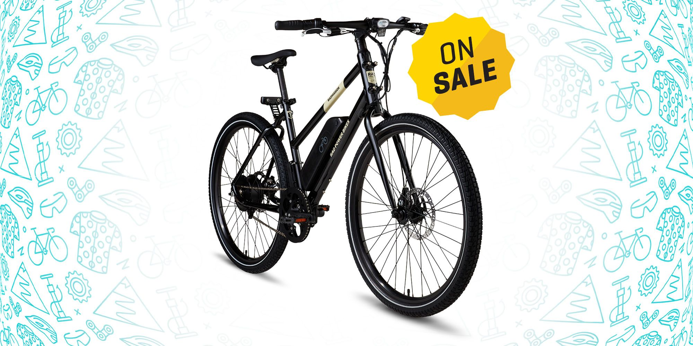

Language Used: SQL
In my project analyzing one year of data for a pizza cafe, I determined daily customer count and peak hours, identified bestselling pizzas and average order size, analyzed annual revenue for seasonality, and provided menu optimization and promotion recommendations. These insights will help the cafe enhance operations, cater to customer preferences, and maximize profitability.
Language Used: Python(Pandas)
In my project , I have cleaned a dataset and output the cleaned data into CSV using python(pandas).
Tools Used: Tableau
During the analysis of the HR dataset, I focused on data cleaning to ensure accuracy and reliability. I then conducted exploratory data analysis (EDA) to gain insights into various HR metrics such as employee demographics, performance ratings, and training scores. Through this analysis, I identified trends and patterns related to employee promotions, employee performance, and the impact of factors such as education and training on career growth. This analysis provides valuable information for HR decision-making and strategic workforce planning.
Tools Used: Tableau
In the analysis of a financial customer complaints database, several key findings have been identified. Firstly, the total number of complaints received each year was examined to understand the overall trend. Additionally, the distribution of complaints by state provides insights into geographic patterns. Another significant metric is the average time taken to resolve complaints, which sheds light on the efficiency of customer service. Lastly, by analyzing the channels through which complaints were submitted, it was possible to determine the most popular submission method. These insights enable businesses to identify areas for improvement in customer satisfaction, streamline complaint resolution processes, and optimize customer engagement channels..
Tools Used: Power BI
Using Power BI, I visualized key metrics for a pizza cafe's one-year data. Highlights include daily customer count, pizza order insights, annual revenue analysis, and menu optimization & promotions. These insights drive informed decisions to enhance operations.

Tools Used: Excel
An EDA on a bike sales Dataset using excel.

This section showcases my participation in weekly SQL challenges where I have successfully solved a variety of questions ranging from easy to hard. I have actively engaged with platforms like LeetCode and Data Lemur to enhance my SQL skills and problem-solving abilities

This section showcases my participation in weekly Python challenges, demonstrating my skills in utilizing libraries such as Pandas and Matplotlib